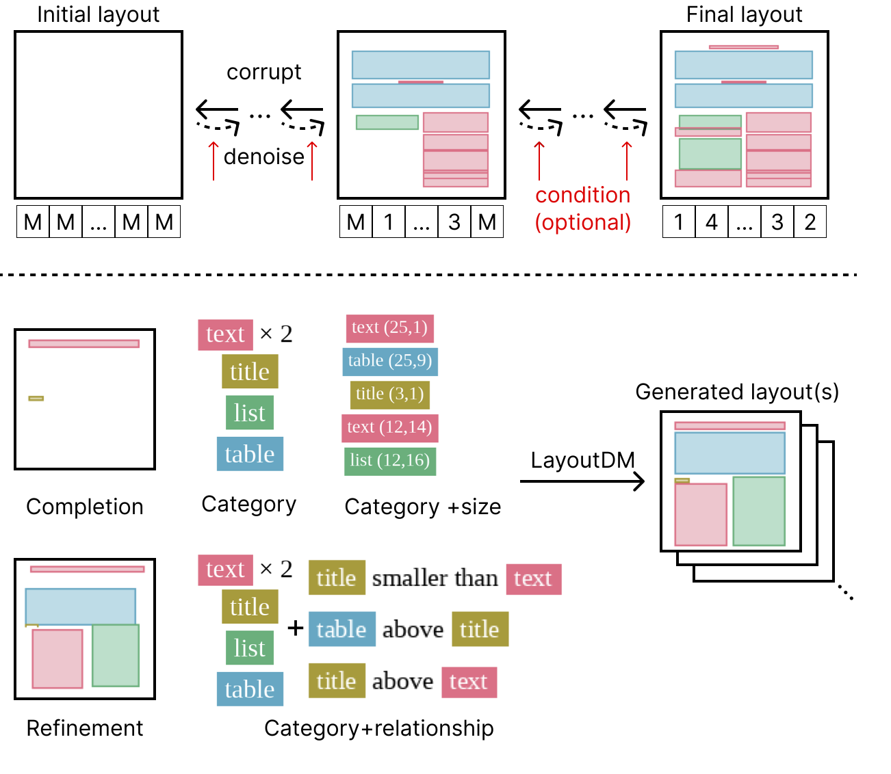

LayoutDM: Discrete Diffusion Model
for Controllable Layout Generation
CVPR 2023
- Naoto Inoue
CyberAgent - Kotaro Kikuchi
CyberAgent - Edgar Simo-Serra
Waseda University - Mayu Otani
CyberAgent - Kota Yamaguchi
CyberAgent

Abstract
Controllable layout generation aims at synthesizing plausible arrangement of element bounding boxes with optional constraints, such as type or position of a specific element. In this work, we try to solve a broad range of layout generation tasks in a single model that is based on discrete state-space diffusion models. Our model, named \emph{LayoutDM}, naturally handles the structured layout data in the discrete representation and learns to progressively infer a noiseless layout from the initial input, where we model the layout corruption process by modality-wise discrete diffusion. For conditional generation, we propose to inject layout constraints in the form of masking or logit adjustment during inference. We show in the experiments that our LayoutDM successfully generates high-quality layouts and outperforms both task-specific and task-agnostic baselines on several layout tasks.
Citation
@inproceedings{inoue2023layout,
title={{LayoutDM: Discrete Diffusion Model for Controllable Layout Generation}},
author={Naoto Inoue and Kotaro Kikuchi and Edgar Simo-Serra and Mayu Otani and Kota Yamaguchi},
booktitle={The IEEE/CVF Conference on Computer Vision and Pattern Recognition (CVPR)},
year={2023},
pages={XXXX-XXXX},
doi={XXXX}
}
Acknowledgements
The website template was borrowed from Mip-NeRF 360.